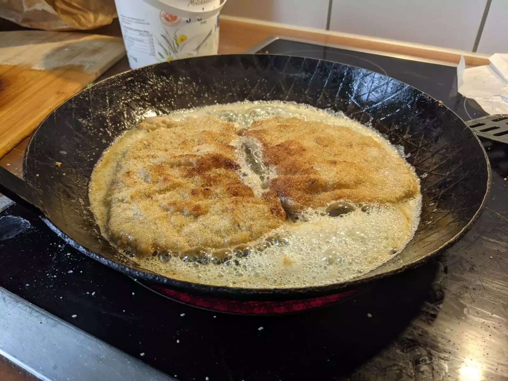

Schnitzel

Original Austrian breaded meat, pan-fried in butter.
- ⏲️ Prep time: 15 min
- 🍳 Cook time: 6 min
- 🍽️ Servings: 4
Ingredients
- 4 veal cutlets (1 ~ 150g)
- 2 eggs
- 1 lemon
- 100g flour
- 150g bread crumbs
- 100g butter (or even better clarified butter)
Directions
- Prepare 3 bowls. (One with flour, one with beaten eggs, one with bread crumbs seasoned with salt and paprika)
- Wash the veal and gently dry it with kitchen roll.
- Put the veal on a board and beat it with a meat tenderizer (or a rolling pin) to a thickness of 0.5 cm. (Beating the veal makes it tender)
- Season the veal with salt and pepper on both sides, dive it through the 3 bowls. (First flour, then eggs, finally bread crumbs)
- Melt the butter in a deep pan. (Attention: not too hot. Butter should not turn brown)
- Fry the veal on each side until it is gold brown. (e.g. 3 min on each side)
- Serve with a piece of lemon.
Contribution
- Tobias & Alexandra Grimm